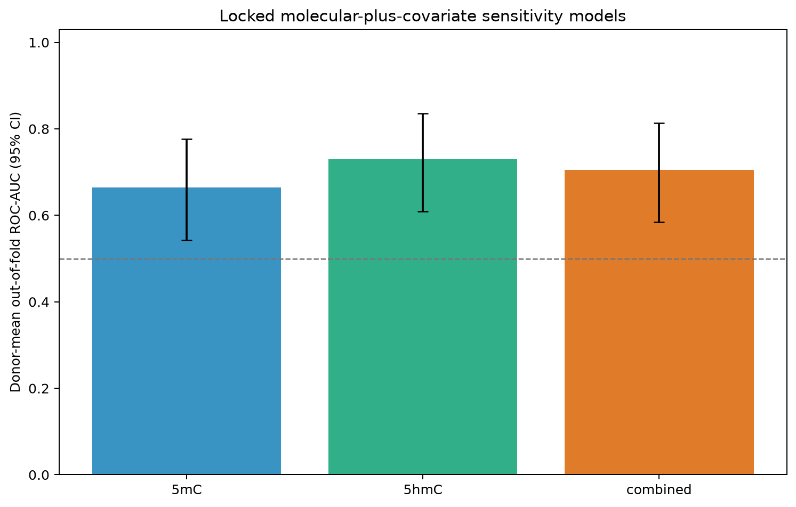
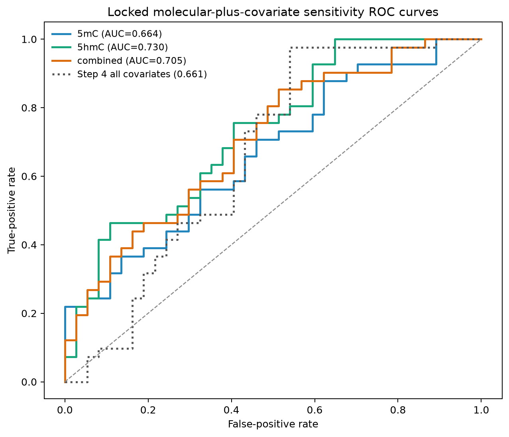
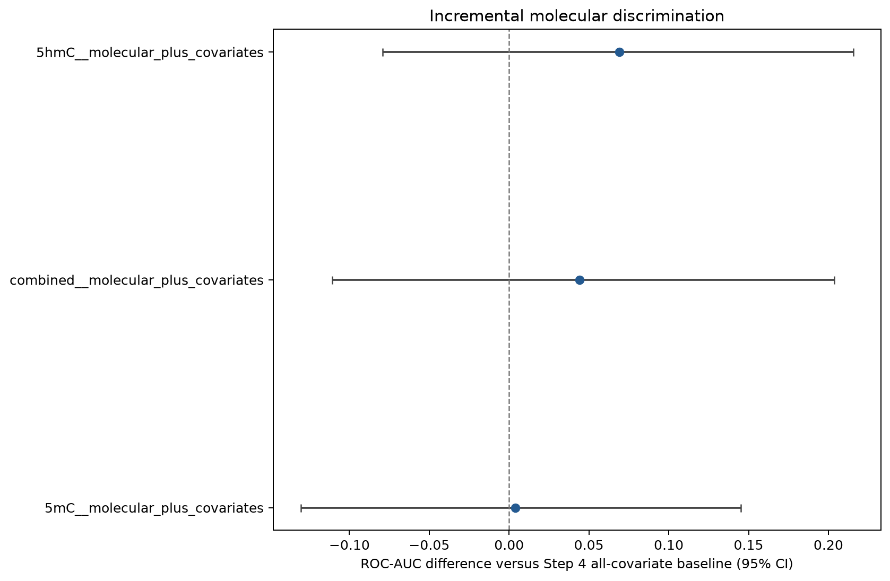
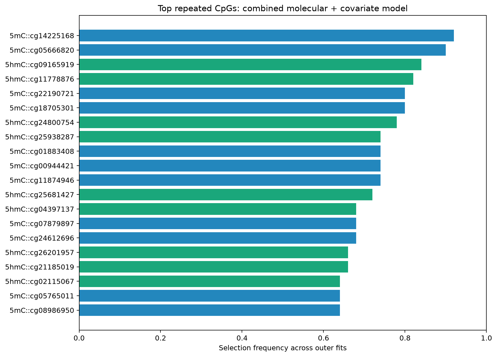

Leakage guardrail: outer-test donors did not contribute to variance pools, missingness rules, imputation, scaling, supervised CpG selection, residualization, or tuning.
Interpretation: this cohort overlaps the primary cohort and is a robustness analysis, not independent external validation. This report estimates prediction, not causality.
Three modalities × the Step 6-locked molecular-plus-covariate view; frozen 5×10 outer CV and four inner folds. Combined models select the stated feature count separately from each modality.
| modality | view | roc_auc_donor_mean_oof | roc_auc_bootstrap_low | roc_auc_bootstrap_high | pr_auc_donor_mean_oof | balanced_accuracy_donor_mean_oof | mcc_donor_mean_oof |
|---|---|---|---|---|---|---|---|
| 5hmC | molecular_plus_covariates | 0.7297 | 0.6084 | 0.8352 | 0.7471 | 0.6401 | 0.2802 |
| 5mC | molecular_plus_covariates | 0.6645 | 0.5425 | 0.7765 | 0.7208 | 0.5969 | 0.1989 |
| combined | molecular_plus_covariates | 0.7047 | 0.5840 | 0.8134 | 0.7362 | 0.6022 | 0.2041 |


| comparison_family | model_a | model_b | roc_auc_difference_a_minus_b | bootstrap_low | bootstrap_high | bootstrap_two_sided_p | bootstrap_iterations | fdr_bh_within_family |
|---|---|---|---|---|---|---|---|---|
| molecular_vs_covariate_baseline | 5hmC__molecular_plus_covariates | all_covariates | 0.0692 | -0.0791 | 0.2156 | 0.3728 | 2000 | 0.9665 |
| molecular_vs_covariate_baseline | 5mC__molecular_plus_covariates | all_covariates | 0.0040 | -0.1305 | 0.1451 | 0.9465 | 2000 | 0.9665 |
| molecular_vs_covariate_baseline | combined__molecular_plus_covariates | all_covariates | 0.0442 | -0.1108 | 0.2037 | 0.5787 | 2000 | 0.9665 |

| modality | view | feature_name | selected_outer_fits | selection_frequency | coefficient_mean_when_selected | positive_coefficient_fraction |
|---|---|---|---|---|---|---|
| combined | molecular_plus_covariates | 5mC::cg14225168 | 46 | 0.9200 | 0.1566 | 0.9348 |
| 5mC | molecular_plus_covariates | 5mC::cg14225168 | 45 | 0.9000 | 0.4758 | 0.9778 |
| 5mC | molecular_plus_covariates | 5mC::cg05666820 | 45 | 0.9000 | -0.1652 | 0.1333 |
| combined | molecular_plus_covariates | 5mC::cg05666820 | 45 | 0.9000 | -0.0622 | 0.1556 |
| combined | molecular_plus_covariates | 5hmC::cg09165919 | 42 | 0.8400 | -0.3648 | 0.0000 |
| 5hmC | molecular_plus_covariates | 5hmC::cg09165919 | 42 | 0.8400 | -0.5689 | 0.0000 |
| 5hmC | molecular_plus_covariates | 5hmC::cg11778876 | 41 | 0.8200 | 0.3006 | 1.0000 |
| combined | molecular_plus_covariates | 5hmC::cg11778876 | 41 | 0.8200 | 0.2245 | 0.9756 |
| combined | molecular_plus_covariates | 5mC::cg18705301 | 40 | 0.8000 | 0.2297 | 1.0000 |
| 5hmC | molecular_plus_covariates | 5hmC::cg25938287 | 40 | 0.8000 | 0.3438 | 0.9750 |
| combined | molecular_plus_covariates | 5mC::cg22190721 | 40 | 0.8000 | -0.1383 | 0.0250 |
| 5hmC | molecular_plus_covariates | 5hmC::cg24800754 | 40 | 0.8000 | -0.1737 | 0.1250 |
| 5mC | molecular_plus_covariates | 5mC::cg22190721 | 39 | 0.7800 | -0.1640 | 0.1026 |
| combined | molecular_plus_covariates | 5hmC::cg24800754 | 39 | 0.7800 | -0.1058 | 0.0000 |
| 5mC | molecular_plus_covariates | 5mC::cg18705301 | 39 | 0.7800 | 0.4858 | 0.9744 |
| 5hmC | molecular_plus_covariates | 5hmC::cg25681427 | 37 | 0.7400 | -0.3708 | 0.0000 |
| combined | molecular_plus_covariates | 5mC::cg11874946 | 37 | 0.7400 | 0.2005 | 1.0000 |
| combined | molecular_plus_covariates | 5mC::cg01883408 | 37 | 0.7400 | -0.1515 | 0.0270 |
| combined | molecular_plus_covariates | 5mC::cg00944421 | 37 | 0.7400 | -0.0646 | 0.1622 |
| combined | molecular_plus_covariates | 5hmC::cg25938287 | 37 | 0.7400 | 0.2052 | 1.0000 |
| combined | molecular_plus_covariates | 5hmC::cg25681427 | 36 | 0.7200 | -0.2438 | 0.0000 |
| 5mC | molecular_plus_covariates | 5mC::cg00944421 | 36 | 0.7200 | -0.1771 | 0.1389 |
| 5hmC | molecular_plus_covariates | 5hmC::cg02115067 | 36 | 0.7200 | 0.3114 | 0.9722 |
| 5hmC | molecular_plus_covariates | 5hmC::cg21185019 | 35 | 0.7000 | 0.1655 | 0.8857 |
| 5mC | molecular_plus_covariates | 5mC::cg01883408 | 35 | 0.7000 | -0.2627 | 0.0000 |
| 5hmC | molecular_plus_covariates | 5hmC::cg14614346 | 34 | 0.6800 | -0.2139 | 0.0588 |
| combined | molecular_plus_covariates | 5mC::cg24612696 | 34 | 0.6800 | 0.0655 | 0.9118 |
| combined | molecular_plus_covariates | 5mC::cg07879897 | 34 | 0.6800 | 0.3252 | 1.0000 |
| combined | molecular_plus_covariates | 5hmC::cg04397137 | 34 | 0.6800 | 0.2272 | 1.0000 |
| 5hmC | molecular_plus_covariates | 5hmC::cg04397137 | 34 | 0.6800 | 0.3429 | 1.0000 |

Interpret this cohort only together with the primary Clean-77 and the other prespecified sensitivity cohort. Do not select a single lucky repeat or outer fold.